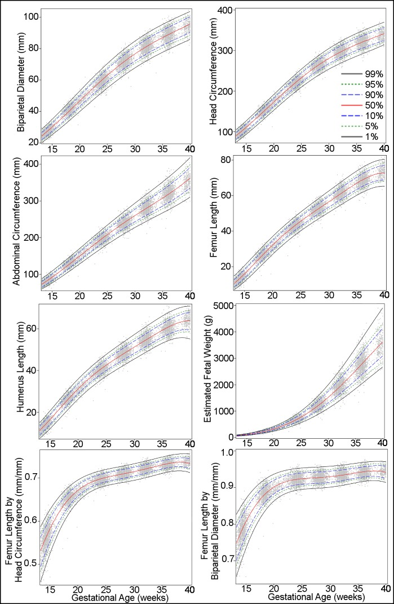

Página 4 · Sofrimento fetal crônico
Diagnóstico de RCIU: peso abaixo do percentil 10 e o próximo passo
RCIU é peso abaixo do percentil 10, e quem dá é a USG
RCIU é peso < p10, e quem dá é a USG. Quando o software da ultrassonografia estima o peso fetal abaixo do percentil 10 para a idade gestacional, está feito o diagnóstico ultrassonográfico de restrição de crescimento (RCIU). Aqui vale registrar a nomenclatura: RCIU é o termo clássico de prova; a terminologia atual das sociedades (FEBRASGO/ISUOG) é RCF — restrição do crescimento fetal (o mesmo conceito, alinhado a fetal growth restriction). O termo antigo “retardo do crescimento” está proscrito.
Interativo: o fluxo acende passo a passo.
Achou peso abaixo do percentil 10, o próximo passo não é discussão — é o Doppler da umbilical, porque a restrição verdadeira quase sempre é menos fluxo pela placenta.O próximo passo obrigatório
O próximo passo obrigatório. Feito o diagnóstico de feto abaixo do percentil 10, a conduta seguinte obrigatória é o Doppler da artéria umbilical. Essa é a sequência que a banca cobra: achou peso abaixo do p10, o próximo exame não é discussão — é o Doppler da umbilical.

O padrão da OMS mostra a família de percentis por idade gestacional (ver o painel “Estimated Fetal Weight”). Abaixo da linha do percentil 10, o próximo passo não é discussão — é o Doppler da umbilical, porque o medo é a insuficiência placentária.
Kiserud T et al. PLoS Medicine 2017;14(1):e1002220 · fonte / licença: CC BY 4.0
Por quê: o medo da insuficiência placentária
Por quê: o medo da insuficiência placentária. O motivo é direto. O feto pequeno assusta pela possibilidade de insuficiência placentária: na maioria das vezes, a restrição verdadeira é falta de fluxo pela placenta. O Doppler da umbilical é justamente o instrumento que vai dizer se o pequeno é um pequeno com placenta funcionando (e aí talvez seja só constitucional) ou um pequeno porque a placenta parou de entregar sangue. É por isso que ele vem imediatamente após o diagnóstico.
Quiz — fixação
A biometria estima peso fetal abaixo do percentil 10 para a idade gestacional. Qual é o próximo passo?
- Gabarito B. Peso abaixo do p10 = diagnóstico de RCIU; o passo obrigatório seguinte é o Doppler da umbilical, para investigar insuficiência placentária.
- A antecipar sem saber o padrão de Doppler (nem a idade) é conduta cega — pode ser até um PIG constitucional, que não se antecipa.
- C o diagnóstico já foi dado pela USG; voltar ao rastreio (fundo) não acrescenta.
- D o eco fetal avalia cardiopatia, não fluxo placentário; não é o exame que decide a restrição.
Por que o Doppler da umbilical é o exame que segue o diagnóstico de feto abaixo do percentil 10?
- Gabarito A. O medo é a insuficiência placentária, e a umbilical é o vaso da placenta.
- B o Doppler mede resistência ao fluxo, não peso — peso é a biometria.
- C circulação materna é a uterina, não a umbilical (confusão de dono do vaso).
- D rastreio de malformação é outro contexto — não é a função da umbilical na restrição.